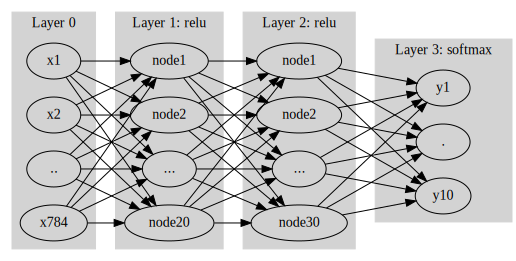

import numpy as np
import matplotlib.pyplot as plt
import tensorflow as tf
import tensorflow.experimental.numpy as tnp기말고사 예상문제
빅데이터분석특강
기말고사 예상문제 - toc:false - branch: master - badges: true - comments: true - author: 심재인
imports
tnp.experimental_enable_numpy_behavior()%load_ext tensorboardimport graphviz
def gv(s): return graphviz.Source('digraph G{ rankdir="LR"'+ s + ';}')#!conda install -c conda-forge python-graphviz -y1. Fashion_mnist, DNN (30점)
(1) tf.keras.datasets.fashion_mnist.load_data()을 이용하여 fashion_mnist 자료를 불러온 뒤 아래의 네트워크를 이용하여 적합하라.
- 평가지표로 accuracy를 이용할 것
- epoch은 10으로 설정할 것
- optimizer는 adam을 이용할 것
#collapse
gv('''
splines=line
subgraph cluster_1{
style=filled;
color=lightgrey;
"x1"
"x2"
".."
"x784"
label = "Layer 0"
}
subgraph cluster_2{
style=filled;
color=lightgrey;
"x1" -> "node1"
"x2" -> "node1"
".." -> "node1"
"x784" -> "node1"
"x1" -> "node2"
"x2" -> "node2"
".." -> "node2"
"x784" -> "node2"
"x1" -> "..."
"x2" -> "..."
".." -> "..."
"x784" -> "..."
"x1" -> "node20"
"x2" -> "node20"
".." -> "node20"
"x784" -> "node20"
label = "Layer 1: relu"
}
subgraph cluster_3{
style=filled;
color=lightgrey;
"node1" -> "node1 "
"node2" -> "node1 "
"..." -> "node1 "
"node20" -> "node1 "
"node1" -> "node2 "
"node2" -> "node2 "
"..." -> "node2 "
"node20" -> "node2 "
"node1" -> "... "
"node2" -> "... "
"..." -> "... "
"node20" -> "... "
"node1" -> "node30 "
"node2" -> "node30 "
"..." -> "node30 "
"node20" -> "node30 "
label = "Layer 2: relu"
}
subgraph cluster_4{
style=filled;
color=lightgrey;
"node1 " -> "y10"
"node2 " -> "y10"
"... " -> "y10"
"node30 " -> "y10"
"node1 " -> "y1"
"node2 " -> "y1"
"... " -> "y1"
"node30 " -> "y1"
"node1 " -> "."
"node2 " -> "."
"... " -> "."
"node30 " -> "."
label = "Layer 3: softmax"
}
''')
(x_train, y_train), (x_test, y_test) = tf.keras.datasets.fashion_mnist.load_data()X = tf.constant(x_train.reshape(-1,28,28,1),dtype=tf.float64)
y = tf.keras.utils.to_categorical(y_train)
XX = tf.constant(x_test.reshape(-1,28,28,1),dtype=tf.float64)
yy = tf.keras.utils.to_categorical(y_test)2022-06-13 18:07:06.073347: I tensorflow/stream_executor/cuda/cuda_gpu_executor.cc:939] successful NUMA node read from SysFS had negative value (-1), but there must be at least one NUMA node, so returning NUMA node zerotf.random.set_seed(4305)
net = tf.keras.Sequential()
net.add(tf.keras.layers.Flatten())
net.add(tf.keras.layers.Dense(20,activation='relu'))
net.add(tf.keras.layers.Dense(30,activation='relu'))
net.add(tf.keras.layers.Dense(10,activation='softmax'))
net.compile(loss=tf.losses.categorical_crossentropy, optimizer='adam',metrics=['accuracy'])
net.fit(X,y,epochs=10)Epoch 1/10
1875/1875 [==============================] - 3s 1ms/step - loss: 1.5931 - accuracy: 0.5048
Epoch 2/10
1875/1875 [==============================] - 3s 1ms/step - loss: 0.9580 - accuracy: 0.6069
Epoch 3/10
1875/1875 [==============================] - 2s 1ms/step - loss: 0.9079 - accuracy: 0.6217
Epoch 4/10
1875/1875 [==============================] - 3s 2ms/step - loss: 0.8931 - accuracy: 0.6271
Epoch 5/10
1875/1875 [==============================] - 3s 2ms/step - loss: 0.8732 - accuracy: 0.6290
Epoch 6/10
1875/1875 [==============================] - 3s 1ms/step - loss: 0.8751 - accuracy: 0.6310
Epoch 7/10
1875/1875 [==============================] - 2s 1ms/step - loss: 0.8634 - accuracy: 0.6353
Epoch 8/10
1875/1875 [==============================] - 2s 1ms/step - loss: 0.8578 - accuracy: 0.6340
Epoch 9/10
1875/1875 [==============================] - 2s 1ms/step - loss: 0.8427 - accuracy: 0.6371
Epoch 10/10
1875/1875 [==============================] - 3s 1ms/step - loss: 0.8528 - accuracy: 0.6336<keras.callbacks.History at 0x7f00665d3c70>(2) (1)에서 적합된 네트워크를 이용하여 test data의 accuracy를 구하라.
net.evaluate(XX,yy)313/313 [==============================] - 0s 1ms/step - loss: 0.8463 - accuracy: 0.6357[0.8462827205657959, 0.635699987411499](3) train set에서 20%의 자료를 validation 으로 분리하여 50에폭동안 학습하라. 텐서보드를 이용하여 train accuracy와 validation accuracy를 시각화 하고 결과를 해석하라. 오버피팅이라고 볼 수 있는가?
tf.random.set_seed(4305)
net = tf.keras.Sequential()
net.add(tf.keras.layers.Flatten())
net.add(tf.keras.layers.Dense(20,activation='relu'))
net.add(tf.keras.layers.Dense(30,activation='relu'))
net.add(tf.keras.layers.Dense(10,activation='softmax'))
net.compile(loss=tf.losses.categorical_crossentropy, optimizer='adam',metrics=['accuracy'])#collapse_output
cb1 = tf.keras.callbacks.TensorBoard()
net.fit(X,y,epochs=50,batch_size=200,validation_split=0.2,callbacks=cb1,verbose=1) Epoch 1/50
240/240 [==============================] - 1s 2ms/step - loss: 3.7604 - accuracy: 0.2533 - val_loss: 1.8268 - val_accuracy: 0.3212
Epoch 2/50
240/240 [==============================] - 0s 1ms/step - loss: 1.7592 - accuracy: 0.3275 - val_loss: 1.6927 - val_accuracy: 0.3509
Epoch 3/50
240/240 [==============================] - 0s 2ms/step - loss: 1.6008 - accuracy: 0.3767 - val_loss: 1.5118 - val_accuracy: 0.4139
Epoch 4/50
240/240 [==============================] - 1s 3ms/step - loss: 1.4380 - accuracy: 0.4215 - val_loss: 1.3867 - val_accuracy: 0.4374
Epoch 5/50
240/240 [==============================] - 1s 2ms/step - loss: 1.3066 - accuracy: 0.4505 - val_loss: 1.2980 - val_accuracy: 0.4444
Epoch 6/50
240/240 [==============================] - 1s 2ms/step - loss: 1.2581 - accuracy: 0.4582 - val_loss: 1.2748 - val_accuracy: 0.4487
Epoch 7/50
240/240 [==============================] - 1s 3ms/step - loss: 1.2330 - accuracy: 0.4642 - val_loss: 1.2586 - val_accuracy: 0.4619
Epoch 8/50
240/240 [==============================] - 0s 2ms/step - loss: 1.2193 - accuracy: 0.4665 - val_loss: 1.2448 - val_accuracy: 0.4613
Epoch 9/50
240/240 [==============================] - 0s 2ms/step - loss: 1.2105 - accuracy: 0.4708 - val_loss: 1.2377 - val_accuracy: 0.4622
Epoch 10/50
240/240 [==============================] - 1s 2ms/step - loss: 1.2070 - accuracy: 0.4655 - val_loss: 1.2371 - val_accuracy: 0.4642
Epoch 11/50
240/240 [==============================] - 0s 2ms/step - loss: 1.1965 - accuracy: 0.4741 - val_loss: 1.2254 - val_accuracy: 0.4652
Epoch 12/50
240/240 [==============================] - 0s 2ms/step - loss: 1.2010 - accuracy: 0.4695 - val_loss: 1.2485 - val_accuracy: 0.4633
Epoch 13/50
240/240 [==============================] - 1s 3ms/step - loss: 1.1945 - accuracy: 0.4700 - val_loss: 1.2370 - val_accuracy: 0.4622
Epoch 14/50
240/240 [==============================] - 0s 2ms/step - loss: 1.1909 - accuracy: 0.4745 - val_loss: 1.2393 - val_accuracy: 0.4631
Epoch 15/50
240/240 [==============================] - 0s 2ms/step - loss: 1.1846 - accuracy: 0.4765 - val_loss: 1.2120 - val_accuracy: 0.4613
Epoch 16/50
240/240 [==============================] - 0s 2ms/step - loss: 1.1775 - accuracy: 0.4799 - val_loss: 1.2313 - val_accuracy: 0.4661
Epoch 17/50
240/240 [==============================] - 0s 2ms/step - loss: 1.0790 - accuracy: 0.5331 - val_loss: 0.9083 - val_accuracy: 0.6162
Epoch 18/50
240/240 [==============================] - 0s 2ms/step - loss: 0.8537 - accuracy: 0.6369 - val_loss: 0.8944 - val_accuracy: 0.6488
Epoch 19/50
240/240 [==============================] - 0s 2ms/step - loss: 0.8094 - accuracy: 0.6599 - val_loss: 0.8285 - val_accuracy: 0.6495
Epoch 20/50
240/240 [==============================] - 0s 2ms/step - loss: 0.7425 - accuracy: 0.7044 - val_loss: 0.8067 - val_accuracy: 0.6590
Epoch 21/50
240/240 [==============================] - 1s 2ms/step - loss: 0.7089 - accuracy: 0.7297 - val_loss: 0.7473 - val_accuracy: 0.7247
Epoch 22/50
240/240 [==============================] - 0s 2ms/step - loss: 0.6667 - accuracy: 0.7424 - val_loss: 0.6920 - val_accuracy: 0.7377
Epoch 23/50
240/240 [==============================] - 0s 2ms/step - loss: 0.6437 - accuracy: 0.7521 - val_loss: 0.6612 - val_accuracy: 0.7607
Epoch 24/50
240/240 [==============================] - 0s 2ms/step - loss: 0.6165 - accuracy: 0.7617 - val_loss: 0.6459 - val_accuracy: 0.7591
Epoch 25/50
240/240 [==============================] - 0s 2ms/step - loss: 0.6074 - accuracy: 0.7645 - val_loss: 0.6200 - val_accuracy: 0.7754
Epoch 26/50
240/240 [==============================] - 1s 2ms/step - loss: 0.5958 - accuracy: 0.7732 - val_loss: 0.6508 - val_accuracy: 0.7409
Epoch 27/50
240/240 [==============================] - 0s 2ms/step - loss: 0.5861 - accuracy: 0.7760 - val_loss: 0.6398 - val_accuracy: 0.7695
Epoch 28/50
240/240 [==============================] - 1s 2ms/step - loss: 0.5731 - accuracy: 0.7811 - val_loss: 0.6187 - val_accuracy: 0.7620
Epoch 29/50
240/240 [==============================] - 0s 2ms/step - loss: 0.5785 - accuracy: 0.7821 - val_loss: 0.6690 - val_accuracy: 0.7592
Epoch 30/50
240/240 [==============================] - 1s 2ms/step - loss: 0.5699 - accuracy: 0.7838 - val_loss: 0.6264 - val_accuracy: 0.7689
Epoch 31/50
240/240 [==============================] - 1s 3ms/step - loss: 0.5614 - accuracy: 0.7887 - val_loss: 0.6336 - val_accuracy: 0.7703
Epoch 32/50
240/240 [==============================] - 0s 2ms/step - loss: 0.5735 - accuracy: 0.7826 - val_loss: 0.6390 - val_accuracy: 0.7651
Epoch 33/50
240/240 [==============================] - 0s 2ms/step - loss: 0.5586 - accuracy: 0.7869 - val_loss: 0.6163 - val_accuracy: 0.7673
Epoch 34/50
240/240 [==============================] - 1s 2ms/step - loss: 0.5639 - accuracy: 0.7859 - val_loss: 0.6234 - val_accuracy: 0.7632
Epoch 35/50
240/240 [==============================] - 0s 2ms/step - loss: 0.5505 - accuracy: 0.7945 - val_loss: 0.6131 - val_accuracy: 0.7771
Epoch 36/50
240/240 [==============================] - 1s 2ms/step - loss: 0.5520 - accuracy: 0.7976 - val_loss: 0.6372 - val_accuracy: 0.7622
Epoch 37/50
240/240 [==============================] - 1s 2ms/step - loss: 0.5506 - accuracy: 0.8038 - val_loss: 0.5787 - val_accuracy: 0.8054
Epoch 38/50
240/240 [==============================] - 0s 2ms/step - loss: 0.5323 - accuracy: 0.8130 - val_loss: 0.5897 - val_accuracy: 0.8002
Epoch 39/50
240/240 [==============================] - 0s 2ms/step - loss: 0.5180 - accuracy: 0.8217 - val_loss: 0.5652 - val_accuracy: 0.8137
Epoch 40/50
240/240 [==============================] - 0s 2ms/step - loss: 0.5087 - accuracy: 0.8242 - val_loss: 0.5604 - val_accuracy: 0.8138
Epoch 41/50
240/240 [==============================] - 0s 2ms/step - loss: 0.5154 - accuracy: 0.8216 - val_loss: 0.5749 - val_accuracy: 0.8083
Epoch 42/50
240/240 [==============================] - 0s 2ms/step - loss: 0.5144 - accuracy: 0.8220 - val_loss: 0.5619 - val_accuracy: 0.8148
Epoch 43/50
240/240 [==============================] - 0s 2ms/step - loss: 0.5058 - accuracy: 0.8260 - val_loss: 0.5536 - val_accuracy: 0.8163
Epoch 44/50
240/240 [==============================] - 1s 2ms/step - loss: 0.5018 - accuracy: 0.8279 - val_loss: 0.5928 - val_accuracy: 0.8047
Epoch 45/50
240/240 [==============================] - 1s 2ms/step - loss: 0.4976 - accuracy: 0.8291 - val_loss: 0.5759 - val_accuracy: 0.8092
Epoch 46/50
240/240 [==============================] - 0s 2ms/step - loss: 0.5027 - accuracy: 0.8270 - val_loss: 0.5770 - val_accuracy: 0.8013
Epoch 47/50
240/240 [==============================] - 1s 2ms/step - loss: 0.4967 - accuracy: 0.8284 - val_loss: 0.5560 - val_accuracy: 0.8148
Epoch 48/50
240/240 [==============================] - 1s 4ms/step - loss: 0.4986 - accuracy: 0.8263 - val_loss: 0.5802 - val_accuracy: 0.8119
Epoch 49/50
240/240 [==============================] - 0s 2ms/step - loss: 0.5021 - accuracy: 0.8277 - val_loss: 0.6201 - val_accuracy: 0.7898
Epoch 50/50
240/240 [==============================] - 0s 2ms/step - loss: 0.4893 - accuracy: 0.8325 - val_loss: 0.5654 - val_accuracy: 0.8139<keras.callbacks.History at 0x7f00580a7070>%tensorboard --logdir logs --host 0.0.0.0 (4) (3)에서 적합된 네트워크를 이용하여 test data의 accuracy를 구하라. (2)의 결과와 비교하라.
net.evaluate(XX,yy)313/313 [==============================] - 1s 1ms/step - loss: 0.6004 - accuracy: 0.8104[0.6003509759902954, 0.8104000091552734](5) 조기종료기능을 이용하여 (3)의 네트워크를 다시 학습하라. 학습결과를 텐서보드를 이용하여 시각화 하라. - patience=3 으로 설정할 것
tf.random.set_seed(4305)
net = tf.keras.Sequential()
net.add(tf.keras.layers.Flatten())
net.add(tf.keras.layers.Dense(20,activation='relu'))
net.add(tf.keras.layers.Dense(30,activation='relu'))
net.add(tf.keras.layers.Dense(10,activation='softmax'))
net.compile(loss=tf.losses.categorical_crossentropy, optimizer='adam',metrics=['accuracy'])cb1 = tf.keras.callbacks.TensorBoard()
cb2 = tf.keras.callbacks.EarlyStopping(patience=3)
net.fit(X,y,epochs=50,batch_size=200,validation_split=0.2,callbacks=[cb1,cb2]) Epoch 1/50
240/240 [==============================] - 1s 2ms/step - loss: 3.7604 - accuracy: 0.2533 - val_loss: 1.8268 - val_accuracy: 0.3212
Epoch 2/50
240/240 [==============================] - 0s 2ms/step - loss: 1.7592 - accuracy: 0.3275 - val_loss: 1.6927 - val_accuracy: 0.3509
Epoch 3/50
240/240 [==============================] - 0s 2ms/step - loss: 1.6008 - accuracy: 0.3767 - val_loss: 1.5118 - val_accuracy: 0.4139
Epoch 4/50
240/240 [==============================] - 1s 3ms/step - loss: 1.4379 - accuracy: 0.4222 - val_loss: 1.3775 - val_accuracy: 0.4302
Epoch 5/50
240/240 [==============================] - 0s 2ms/step - loss: 1.3140 - accuracy: 0.4486 - val_loss: 1.3151 - val_accuracy: 0.4382
Epoch 6/50
240/240 [==============================] - 1s 2ms/step - loss: 1.2642 - accuracy: 0.4572 - val_loss: 1.2761 - val_accuracy: 0.4493
Epoch 7/50
240/240 [==============================] - 1s 4ms/step - loss: 1.2326 - accuracy: 0.4636 - val_loss: 1.2428 - val_accuracy: 0.4622
Epoch 8/50
240/240 [==============================] - 0s 2ms/step - loss: 1.2164 - accuracy: 0.4680 - val_loss: 1.2297 - val_accuracy: 0.4630
Epoch 9/50
240/240 [==============================] - 1s 3ms/step - loss: 1.2113 - accuracy: 0.4680 - val_loss: 1.2636 - val_accuracy: 0.4579
Epoch 10/50
240/240 [==============================] - 0s 2ms/step - loss: 1.2073 - accuracy: 0.4672 - val_loss: 1.2401 - val_accuracy: 0.4648
Epoch 11/50
240/240 [==============================] - 0s 2ms/step - loss: 1.1960 - accuracy: 0.4719 - val_loss: 1.2252 - val_accuracy: 0.4662
Epoch 12/50
240/240 [==============================] - 0s 2ms/step - loss: 1.1938 - accuracy: 0.4719 - val_loss: 1.2334 - val_accuracy: 0.4652
Epoch 13/50
240/240 [==============================] - 1s 2ms/step - loss: 1.1888 - accuracy: 0.4730 - val_loss: 1.2353 - val_accuracy: 0.4635
Epoch 14/50
240/240 [==============================] - 1s 2ms/step - loss: 1.1124 - accuracy: 0.5195 - val_loss: 1.0564 - val_accuracy: 0.5371
Epoch 15/50
240/240 [==============================] - 0s 2ms/step - loss: 1.0059 - accuracy: 0.5556 - val_loss: 1.0487 - val_accuracy: 0.5492
Epoch 16/50
240/240 [==============================] - 0s 2ms/step - loss: 0.9738 - accuracy: 0.5659 - val_loss: 0.9910 - val_accuracy: 0.5705
Epoch 17/50
240/240 [==============================] - 1s 2ms/step - loss: 0.9336 - accuracy: 0.5824 - val_loss: 0.9485 - val_accuracy: 0.5882
Epoch 18/50
240/240 [==============================] - 1s 3ms/step - loss: 0.9061 - accuracy: 0.5903 - val_loss: 0.9322 - val_accuracy: 0.5903
Epoch 19/50
240/240 [==============================] - 0s 2ms/step - loss: 0.8916 - accuracy: 0.5959 - val_loss: 0.9291 - val_accuracy: 0.6063
Epoch 20/50
240/240 [==============================] - 0s 2ms/step - loss: 0.8764 - accuracy: 0.6091 - val_loss: 0.9857 - val_accuracy: 0.5641
Epoch 21/50
240/240 [==============================] - 0s 2ms/step - loss: 0.8798 - accuracy: 0.6152 - val_loss: 0.9307 - val_accuracy: 0.5952
Epoch 22/50
240/240 [==============================] - 1s 2ms/step - loss: 0.8610 - accuracy: 0.6280 - val_loss: 0.8747 - val_accuracy: 0.6604
Epoch 23/50
240/240 [==============================] - 0s 2ms/step - loss: 0.8173 - accuracy: 0.6770 - val_loss: 0.8339 - val_accuracy: 0.7003
Epoch 24/50
240/240 [==============================] - 0s 2ms/step - loss: 0.7832 - accuracy: 0.6968 - val_loss: 0.7947 - val_accuracy: 0.7060
Epoch 25/50
240/240 [==============================] - 1s 2ms/step - loss: 0.7679 - accuracy: 0.7033 - val_loss: 0.7749 - val_accuracy: 0.7098
Epoch 26/50
240/240 [==============================] - 1s 2ms/step - loss: 0.7428 - accuracy: 0.7130 - val_loss: 0.7888 - val_accuracy: 0.7041
Epoch 27/50
240/240 [==============================] - 1s 3ms/step - loss: 0.7450 - accuracy: 0.7131 - val_loss: 0.8130 - val_accuracy: 0.6842
Epoch 28/50
240/240 [==============================] - 0s 2ms/step - loss: 0.7344 - accuracy: 0.7173 - val_loss: 0.7820 - val_accuracy: 0.7192<keras.callbacks.History at 0x7f0050636980>%tensorboard --logdir logs --host 0.0.0.0 Reusing TensorBoard on port 6006 (pid 1475105), started 0:00:15 ago. (Use '!kill 1475105' to kill it.)2. Fashion_mnist, CNN (30점)
(1) tf.keras.datasets.fashion_mnist.load_data()을 이용하여 fashion_mnist 자료를 불러온 뒤 아래의 네트워크를 이용하여 적합하라.
- 이때 n1=6, n2=16, n3=120 으로 설정한다, 드랍아웃비율은 20%로 설정한다.
net.summary()를 출력하여 설계결과를 확인하라.

tf.random.set_seed(4305)
net1 = tf.keras.Sequential()
net1.add(tf.keras.layers.Conv2D(6,(4,4),activation='relu'))
net1.add(tf.keras.layers.MaxPool2D())
net1.add(tf.keras.layers.Conv2D(16,(4,4),activation='relu'))
net1.add(tf.keras.layers.MaxPool2D())
net1.add(tf.keras.layers.Flatten())
net1.add(tf.keras.layers.Dense(120,activation='relu'))
net1.add(tf.keras.layers.Dense(10,activation='softmax'))
net1.add(tf.keras.layers.Dropout(0.2))
net1.compile(optimizer='adam', loss=tf.losses.categorical_crossentropy,metrics='accuracy')
net1.fit(X,y,epochs=5,batch_size=200)Epoch 1/5
300/300 [==============================] - 2s 2ms/step - loss: 4.7347 - accuracy: 0.5660
Epoch 2/5
300/300 [==============================] - 1s 2ms/step - loss: 3.5843 - accuracy: 0.6647
Epoch 3/5
300/300 [==============================] - 1s 3ms/step - loss: 3.5181 - accuracy: 0.6823
Epoch 4/5
300/300 [==============================] - 2s 5ms/step - loss: 3.4991 - accuracy: 0.6916
Epoch 5/5
300/300 [==============================] - 1s 2ms/step - loss: 3.4950 - accuracy: 0.6990<keras.callbacks.History at 0x7f00505c73a0>net1.evaluate(XX,yy)313/313 [==============================] - 0s 1ms/step - loss: 0.4629 - accuracy: 0.8334[0.46292147040367126, 0.8334000110626221]net1.summary()Model: "sequential_3"
_________________________________________________________________
Layer (type) Output Shape Param #
=================================================================
conv2d (Conv2D) (None, 25, 25, 6) 102
max_pooling2d (MaxPooling2D (None, 12, 12, 6) 0
)
conv2d_1 (Conv2D) (None, 9, 9, 16) 1552
max_pooling2d_1 (MaxPooling (None, 4, 4, 16) 0
2D)
flatten_3 (Flatten) (None, 256) 0
dense_9 (Dense) (None, 120) 30840
dense_10 (Dense) (None, 10) 1210
dropout (Dropout) (None, 10) 0
=================================================================
Total params: 33,704
Trainable params: 33,704
Non-trainable params: 0
_________________________________________________________________c1, m1, c2, m2, flttn, dns1, dns2, dropout = net1.layersprint(X.shape)
print(c1(X).shape)
print(m1(c1(X)).shape)
print(c2(m1(c1(X))).shape)
print(m2(c2(m1(c1(X)))).shape)
print(flttn(m2(c2(m1(c1(X))))).shape)
print(dns1(flttn(m2(c2(m1(c1(X)))))).shape)
print(dns2(dns1(flttn(m2(c2(m1(c1(X))))))).shape)
print(dropout(dns2(dns1(flttn(m2(c2(m1(c1(X)))))))).shape)(60000, 28, 28, 1)
(60000, 25, 25, 6)
(60000, 12, 12, 6)
(60000, 9, 9, 16)
(60000, 4, 4, 16)
(60000, 256)
(60000, 120)
(60000, 10)
(60000, 10)(2) n1=(6,64,128), n2=(16,256)에 대하여 test set의 loss가 최소화되는 조합을 찾아라. 결과를 텐서보드로 시각화하는 코드를 작성하라. - epoc은 3회로 한정한다. - validation_split은 0.2로 설정한다.
from tensorboard.plugins.hparams import api as hp!rm -rf logs
for u in [6,64,128]:
for d in [16,256]:
logdir = 'logs/hpguebin_{}_{}'.format(u,d)
with tf.summary.create_file_writer(logdir).as_default():
tf.random.set_seed(4305)
net1 = tf.keras.Sequential()
net1.add(tf.keras.layers.Conv2D(6,(4,4),activation='relu'))
net1.add(tf.keras.layers.MaxPool2D())
net1.add(tf.keras.layers.Conv2D(16,(4,4),activation='relu'))
net1.add(tf.keras.layers.MaxPool2D())
net1.add(tf.keras.layers.Flatten())
net1.add(tf.keras.layers.Dense(120,activation='relu'))
net1.add(tf.keras.layers.Dense(10,activation='softmax'))
net1.add(tf.keras.layers.Dropout(0.2))
net1.compile(optimizer='adam', loss=tf.losses.categorical_crossentropy,metrics='accuracy')
cb3 = hp.KerasCallback(logdir, {'n1':u, 'n2':d})
net1.fit(X,y,epochs=3,batch_size=200,callbacks=cb3,validation_split=0.2)
_rslt=net.evaluate(XX,yy)
tf.summary.scalar('test set loss', _rslt[0], step=1)Epoch 1/3
240/240 [==============================] - 1s 3ms/step - loss: 4.5247 - accuracy: 0.5634 - val_loss: 0.6971 - val_accuracy: 0.7641
Epoch 2/3
240/240 [==============================] - 1s 2ms/step - loss: 3.6050 - accuracy: 0.6616 - val_loss: 0.5841 - val_accuracy: 0.7986
Epoch 3/3
240/240 [==============================] - 1s 3ms/step - loss: 3.5395 - accuracy: 0.6785 - val_loss: 0.5066 - val_accuracy: 0.8183
313/313 [==============================] - 0s 1ms/step - loss: 0.7856 - accuracy: 0.7178
Epoch 1/3
240/240 [==============================] - 1s 2ms/step - loss: 4.5250 - accuracy: 0.5634 - val_loss: 0.6955 - val_accuracy: 0.7667
Epoch 2/3
240/240 [==============================] - 0s 2ms/step - loss: 3.6047 - accuracy: 0.6609 - val_loss: 0.5796 - val_accuracy: 0.8022
Epoch 3/3
240/240 [==============================] - 1s 2ms/step - loss: 3.5403 - accuracy: 0.6794 - val_loss: 0.5066 - val_accuracy: 0.8194
313/313 [==============================] - 0s 1ms/step - loss: 0.7856 - accuracy: 0.7178
Epoch 1/3
240/240 [==============================] - 1s 2ms/step - loss: 4.5250 - accuracy: 0.5634 - val_loss: 0.6955 - val_accuracy: 0.7667
Epoch 2/3
240/240 [==============================] - 0s 2ms/step - loss: 3.6043 - accuracy: 0.6614 - val_loss: 0.5811 - val_accuracy: 0.8035
Epoch 3/3
240/240 [==============================] - 0s 2ms/step - loss: 3.5402 - accuracy: 0.6796 - val_loss: 0.5060 - val_accuracy: 0.8189
313/313 [==============================] - 0s 1ms/step - loss: 0.7856 - accuracy: 0.7178
Epoch 1/3
240/240 [==============================] - 1s 2ms/step - loss: 4.5264 - accuracy: 0.5641 - val_loss: 0.6979 - val_accuracy: 0.7617
Epoch 2/3
240/240 [==============================] - 1s 2ms/step - loss: 3.6080 - accuracy: 0.6594 - val_loss: 0.5781 - val_accuracy: 0.7992
Epoch 3/3
240/240 [==============================] - 1s 2ms/step - loss: 3.5403 - accuracy: 0.6784 - val_loss: 0.5089 - val_accuracy: 0.8193
313/313 [==============================] - 0s 1ms/step - loss: 0.7856 - accuracy: 0.7178
Epoch 1/3
240/240 [==============================] - 1s 2ms/step - loss: 4.5266 - accuracy: 0.5646 - val_loss: 0.7037 - val_accuracy: 0.7628
Epoch 2/3
240/240 [==============================] - 1s 2ms/step - loss: 3.6056 - accuracy: 0.6609 - val_loss: 0.5811 - val_accuracy: 0.8027
Epoch 3/3
240/240 [==============================] - 1s 2ms/step - loss: 3.5394 - accuracy: 0.6799 - val_loss: 0.5044 - val_accuracy: 0.8208
313/313 [==============================] - 0s 1ms/step - loss: 0.7856 - accuracy: 0.7178
Epoch 1/3
240/240 [==============================] - 1s 2ms/step - loss: 4.5266 - accuracy: 0.5643 - val_loss: 0.7022 - val_accuracy: 0.7646
Epoch 2/3
240/240 [==============================] - 0s 2ms/step - loss: 3.6060 - accuracy: 0.6614 - val_loss: 0.5794 - val_accuracy: 0.8032
Epoch 3/3
240/240 [==============================] - 1s 3ms/step - loss: 3.5388 - accuracy: 0.6797 - val_loss: 0.5140 - val_accuracy: 0.8155
313/313 [==============================] - 0s 1ms/step - loss: 0.7856 - accuracy: 0.7178%tensorboard --logdir logs --host 0.0.0.0Reusing TensorBoard on port 6006 (pid 1475105), started 0:00:37 ago. (Use '!kill 1475105' to kill it.)3. CIFAR10 (30점)
tf.keras.datasets.cifar10.load_data()을 이용하여 CIFAR10을 불러온 뒤 적당한 네트워크를 사용하여 적합하라.
- 결과를 텐서보드로 시각화할 필요는 없다.
- 자유롭게 모형을 설계하여 적합하라.
- test set의 accuracy가 70%이상인 경우만 정답으로 인정한다.
(x_train, y_train), (x_test, y_test) = tf.keras.datasets.cifar10.load_data()x_train.shape(50000, 32, 32, 3)X = tf.constant(x_train.reshape(-1,32,32,3),dtype=tf.float64)
y = tf.keras.utils.to_categorical(y_train)
XX = tf.constant(x_test.reshape(-1,32,32,3),dtype=tf.float64)
yy = tf.keras.utils.to_categorical(y_test)print(X.shape)
print(y.shape)
print(XX.shape)
print(yy.shape)(50000, 32, 32, 3)
(50000, 10)
(10000, 32, 32, 3)
(10000, 10)net2 = tf.keras.Sequential()
net2.add(tf.keras.layers.Conv2D(512,(2,2),activation='relu'))
net2.add(tf.keras.layers.Conv2D(512,(2,2),activation='relu'))
net2.add(tf.keras.layers.Dropout(0.5))
net2.add(tf.keras.layers.MaxPool2D())
net2.add(tf.keras.layers.Conv2D(512,(2,2),activation='relu'))
net2.add(tf.keras.layers.Conv2D(512,(2,2),activation='relu'))
net2.add(tf.keras.layers.Dropout(0.5))
net2.add(tf.keras.layers.MaxPool2D())
net2.add(tf.keras.layers.Flatten())
net2.add(tf.keras.layers.Dense(10,activation='softmax'))
net2.compile(optimizer='adam', loss=tf.losses.categorical_crossentropy,metrics='accuracy')net2.fit(X,y,epochs=5,validation_split=0.2)Epoch 1/5
1250/1250 [==============================] - 44s 35ms/step - loss: 2.2100 - accuracy: 0.4334 - val_loss: 1.4963 - val_accuracy: 0.5213
Epoch 2/5
1250/1250 [==============================] - 43s 35ms/step - loss: 1.2402 - accuracy: 0.5626 - val_loss: 1.3536 - val_accuracy: 0.5743
Epoch 3/5
1250/1250 [==============================] - 43s 35ms/step - loss: 1.1110 - accuracy: 0.6104 - val_loss: 1.2189 - val_accuracy: 0.6069
Epoch 4/5
1250/1250 [==============================] - 43s 35ms/step - loss: 1.0174 - accuracy: 0.6427 - val_loss: 1.1409 - val_accuracy: 0.6466
Epoch 5/5
1250/1250 [==============================] - 43s 35ms/step - loss: 0.9725 - accuracy: 0.6606 - val_loss: 1.0891 - val_accuracy: 0.6455<keras.callbacks.History at 0x7f005037d930>net2.fit(X,y,epochs=10,validation_split=0.2)Epoch 1/10
1250/1250 [==============================] - 44s 35ms/step - loss: 0.9142 - accuracy: 0.6825 - val_loss: 1.0787 - val_accuracy: 0.6388
Epoch 2/10
1250/1250 [==============================] - 44s 35ms/step - loss: 0.8797 - accuracy: 0.6935 - val_loss: 1.0044 - val_accuracy: 0.6667
Epoch 3/10
1250/1250 [==============================] - 44s 35ms/step - loss: 0.8509 - accuracy: 0.7039 - val_loss: 0.9295 - val_accuracy: 0.6799
Epoch 4/10
1250/1250 [==============================] - 44s 35ms/step - loss: 0.8338 - accuracy: 0.7113 - val_loss: 0.9554 - val_accuracy: 0.6747
Epoch 5/10
1250/1250 [==============================] - 44s 35ms/step - loss: 0.8201 - accuracy: 0.7141 - val_loss: 1.0631 - val_accuracy: 0.6435
Epoch 6/10
1250/1250 [==============================] - 44s 35ms/step - loss: 0.8030 - accuracy: 0.7235 - val_loss: 0.9158 - val_accuracy: 0.6929
Epoch 7/10
1250/1250 [==============================] - 44s 35ms/step - loss: 0.7904 - accuracy: 0.7266 - val_loss: 0.9175 - val_accuracy: 0.6878
Epoch 8/10
1250/1250 [==============================] - 44s 35ms/step - loss: 0.7732 - accuracy: 0.7323 - val_loss: 0.9135 - val_accuracy: 0.6860
Epoch 9/10
1250/1250 [==============================] - 44s 35ms/step - loss: 0.7665 - accuracy: 0.7327 - val_loss: 0.9677 - val_accuracy: 0.6756
Epoch 10/10
1250/1250 [==============================] - 44s 35ms/step - loss: 0.7622 - accuracy: 0.7346 - val_loss: 0.8576 - val_accuracy: 0.7060<keras.callbacks.History at 0x7f00cda3aaa0>net2.evaluate(XX,yy)313/313 [==============================] - 4s 11ms/step - loss: 0.8638 - accuracy: 0.7041[0.8638339042663574, 0.7041000127792358]4. 다음을 읽고 물음에 답하라. (10점)
- (1,128,128,3)의 shape을 가진 텐서가
tf.keras.layers.Conv2D(5,(2,2))으로 만들어진 커널을 통과할시 나오는 shape은?
tf.random.set_seed(43052)
cnv = tf.keras.layers.Conv2D(5,(2,2))
XXX = tnp.array([1]*1*128*128*3,dtype=tf.float64).reshape(1,128,128,3)cnv(XXX)<tf.Tensor: shape=(1, 127, 127, 5), dtype=float32, numpy=
array([[[[-0.7661123 , -0.81788373, 0.151829 , -0.94353175,
-0.43155703],
[-0.7661123 , -0.81788373, 0.151829 , -0.94353175,
-0.43155703],
[-0.7661123 , -0.81788373, 0.151829 , -0.94353175,
-0.43155703],
...,
[-0.7661123 , -0.81788373, 0.151829 , -0.94353175,
-0.43155703],
[-0.7661123 , -0.81788373, 0.151829 , -0.94353175,
-0.43155703],
[-0.7661123 , -0.81788373, 0.151829 , -0.94353175,
-0.43155703]],
[[-0.7661123 , -0.81788373, 0.151829 , -0.94353175,
-0.43155703],
[-0.7661123 , -0.81788373, 0.151829 , -0.94353175,
-0.43155703],
[-0.7661123 , -0.81788373, 0.151829 , -0.94353175,
-0.43155703],
...,
[-0.7661123 , -0.81788373, 0.151829 , -0.94353175,
-0.43155703],
[-0.7661123 , -0.81788373, 0.151829 , -0.94353175,
-0.43155703],
[-0.7661123 , -0.81788373, 0.151829 , -0.94353175,
-0.43155703]],
[[-0.7661123 , -0.81788373, 0.151829 , -0.94353175,
-0.43155703],
[-0.7661123 , -0.81788373, 0.151829 , -0.94353175,
-0.43155703],
[-0.7661123 , -0.81788373, 0.151829 , -0.94353175,
-0.43155703],
...,
[-0.7661123 , -0.81788373, 0.151829 , -0.94353175,
-0.43155703],
[-0.7661123 , -0.81788373, 0.151829 , -0.94353175,
-0.43155703],
[-0.7661123 , -0.81788373, 0.151829 , -0.94353175,
-0.43155703]],
...,
[[-0.7661123 , -0.81788373, 0.151829 , -0.94353175,
-0.43155703],
[-0.7661123 , -0.81788373, 0.151829 , -0.94353175,
-0.43155703],
[-0.7661123 , -0.81788373, 0.151829 , -0.94353175,
-0.43155703],
...,
[-0.7661123 , -0.81788373, 0.151829 , -0.94353175,
-0.43155703],
[-0.7661123 , -0.81788373, 0.151829 , -0.94353175,
-0.43155703],
[-0.7661123 , -0.81788373, 0.151829 , -0.94353175,
-0.43155703]],
[[-0.7661123 , -0.81788373, 0.151829 , -0.94353175,
-0.43155703],
[-0.7661123 , -0.81788373, 0.151829 , -0.94353175,
-0.43155703],
[-0.7661123 , -0.81788373, 0.151829 , -0.94353175,
-0.43155703],
...,
[-0.7661123 , -0.81788373, 0.151829 , -0.94353175,
-0.43155703],
[-0.7661123 , -0.81788373, 0.151829 , -0.94353175,
-0.43155703],
[-0.7661123 , -0.81788373, 0.151829 , -0.94353175,
-0.43155703]],
[[-0.7661123 , -0.81788373, 0.151829 , -0.94353175,
-0.43155703],
[-0.7661123 , -0.81788373, 0.151829 , -0.94353175,
-0.43155703],
[-0.7661123 , -0.81788373, 0.151829 , -0.94353175,
-0.43155703],
...,
[-0.7661123 , -0.81788373, 0.151829 , -0.94353175,
-0.43155703],
[-0.7661123 , -0.81788373, 0.151829 , -0.94353175,
-0.43155703],
[-0.7661123 , -0.81788373, 0.151829 , -0.94353175,
-0.43155703]]]], dtype=float32)>답 : (1, 127, 127, 5)
- (1,24,24,16)의 shape을 가진 텐서가
tf.keras.layers.Flatten()을 통과할때 나오는 텐서의 shape은?
24*24*169216답 : (1, 9216)